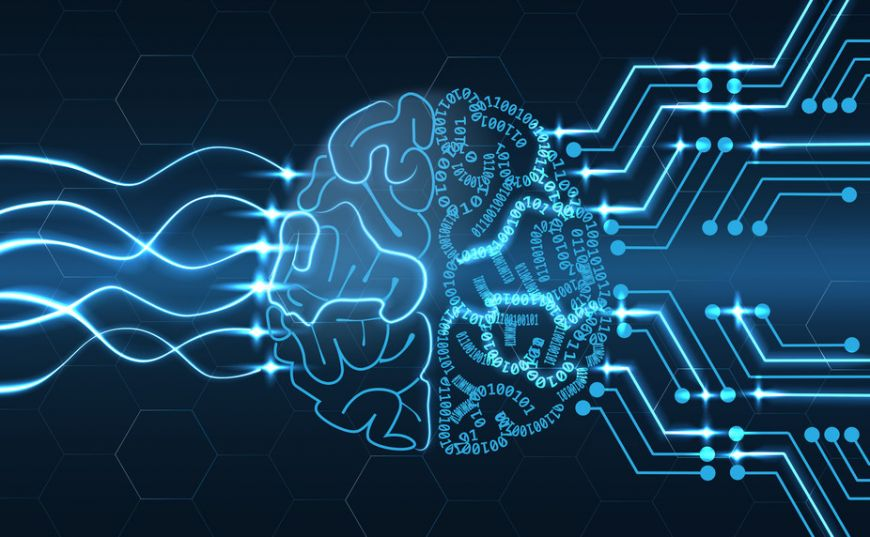
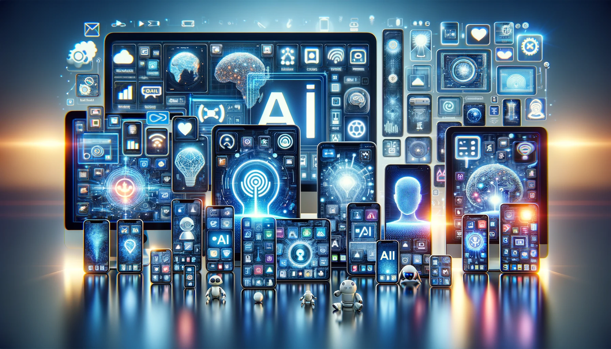

Contemporary Relevance
Impact on Technology
Artificial intelligence (AI) and machine learning (ML) have revolutionized the tech industry, transforming the way we interact with computers and smart devices. These technologies have enabled the development of complex and innovative applications that have become an integral part of our daily lives. A key aspect of the impact of AI and ML technologies on technology is their ability to process and analyze massive amounts of data in real time. AI algorithms, such as deep neural networks, are capable of identifying complex patterns in both structured and unstructured data, thereby delivering accurate and relevant results across a variety of fields. This capability has had a significant impact in fields such as medicine, the automotive industry, and finance, enabling the development of new and innovative applications. In medicine, for example, AI technologies are used for disease diagnosis, medical image analysis, and the development of personalized treatments. ML algorithms can identify subtle patterns in clinical data, helping doctors make more accurate and faster decisions regarding patient diagnosis and treatment. In the automotive industry, autonomous vehicles use AI technologies to navigate safely on roads and to detect and avoid obstacles in real time. These technologies promote road safety and can reduce the number of accidents caused by human error. In addition, AI and ML technologies have had a significant impact on the information and communications technology sector. For example, virtual assistants such as Siri and Alexa use AI technologies to answer users’ questions and perform simple tasks, such as setting alarms or timers. Machine translation algorithms use ML to understand and translate texts in different languages, facilitating communication between people who speak different languages. In conclusion, the impact of AI and ML technologies on technology is vast and profound, transforming the way we interact with computers and smart devices. These technologies have opened up new possibilities and opportunities in a variety of fields and continue to inspire innovation and development in the future.


Applications in Various Fields
The impact of artificial intelligence (AI) and machine learning (ML) technologies is felt across a wide range of fields, from medicine and the automotive industry to finance, e-commerce, and entertainment. These technologies are used to solve complex problems and optimize processes in various industries, bringing significant benefits to both companies and consumers. In medicine, AI and ML technologies are used to improve disease diagnosis and treatment. For example, AI diagnostic systems can analyze medical images to detect subtle signs of diseases and provide precise treatment recommendations. Additionally, ML algorithms are used to analyze clinical and genetic data of patients, helping in the development of personalized treatments and the identification of risk factors for various conditions. In the automotive industry, AI technologies are used to develop autonomous vehicles and advanced driver assistance systems. For instance, autonomous driving systems use sensors and cameras to detect and avoid obstacles in traffic, thereby reducing the risk of accidents and improving road safety. Moreover, AI technologies are utilized to optimize production processes in the automotive industry, reducing costs and the time needed to assemble vehicles. In finance, AI technologies are used to analyze market data and make more efficient investment decisions. ML algorithms can identify complex patterns in financial data and generate personalized investment recommendations, helping investors achieve higher returns while minimizing risks. In conclusion, the applications of AI and ML technologies are diverse and extensive across various fields, bringing significant benefits to society and the economy. These technologies have the potential to solve complex problems and optimize processes in different industries, contributing to the continuous progress and development of society.
Transforming everyday life
The impact of artificial intelligence (AI) and machine learning (ML) technologies is felt across a wide range of fields, from medicine and the automotive industry to finance, e-commerce, and entertainment. These technologies are used to solve complex problems and optimize processes in various industries, bringing significant benefits to both companies and consumers. In medicine, AI and ML technologies are used to improve disease diagnosis and treatment. For example, AI diagnostic systems can analyze medical images to detect subtle signs of diseases and provide precise treatment recommendations. Additionally, ML algorithms are used to analyze clinical and genetic data of patients, helping in the development of personalized treatments and the identification of risk factors for various conditions. In the automotive industry, AI technologies are used to develop autonomous vehicles and advanced driver assistance systems. For instance, autonomous driving systems use sensors and cameras to detect and avoid obstacles in traffic, thereby reducing the risk of accidents and improving road safety. Moreover, AI technologies are utilized to optimize production processes in the automotive industry, reducing costs and the time needed to assemble vehicles. In finance, AI technologies are used to analyze market data and make more efficient investment decisions. ML algorithms can identify complex patterns in financial data and generate personalized investment recommendations, helping investors achieve higher returns while minimizing risks. In conclusion, the applications of AI and ML technologies are diverse and extensive across various fields, bringing significant benefits to society and the economy. These technologies have the potential to solve complex problems and optimize processes in different industries, contributing to the continuous progress and development of society.
Datcu Daniel-Alexandru
Version: 2.0
Copyright © 2024